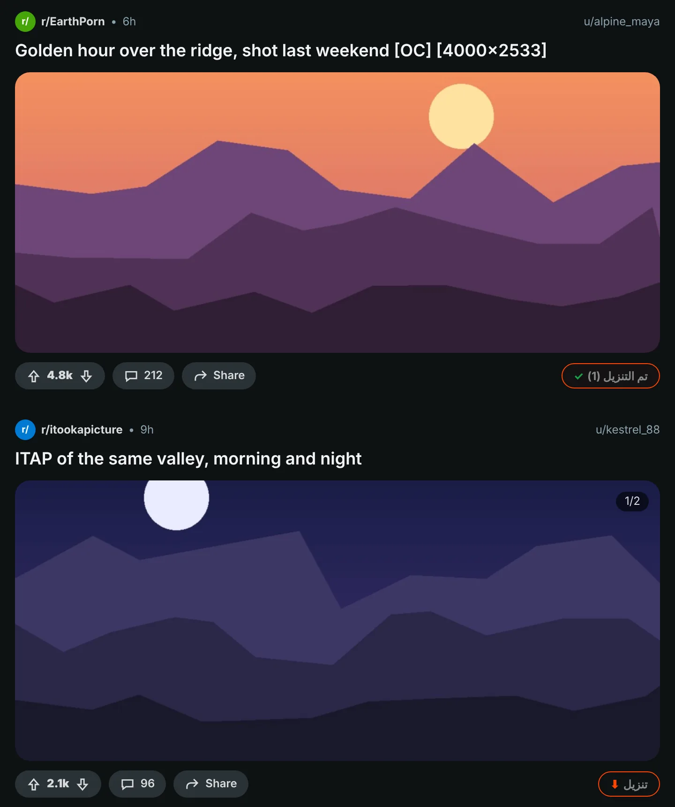
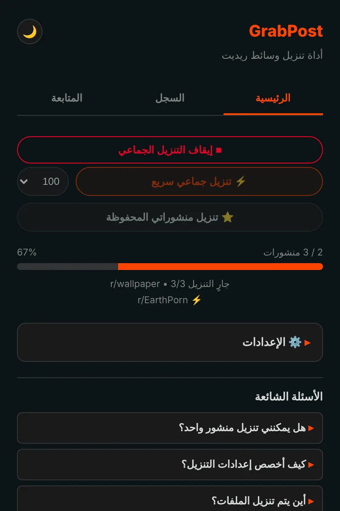
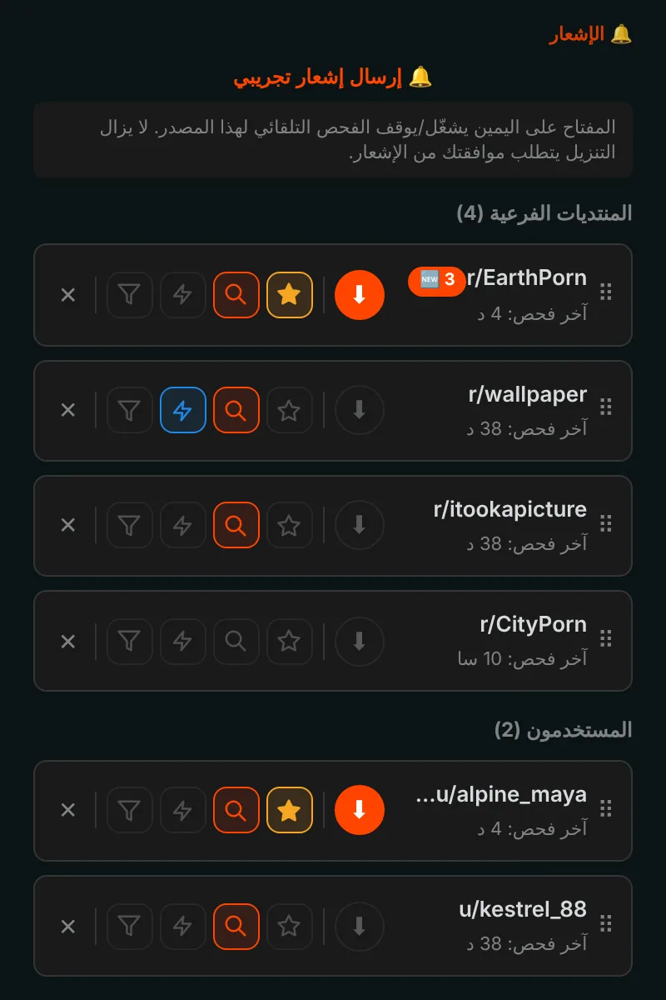
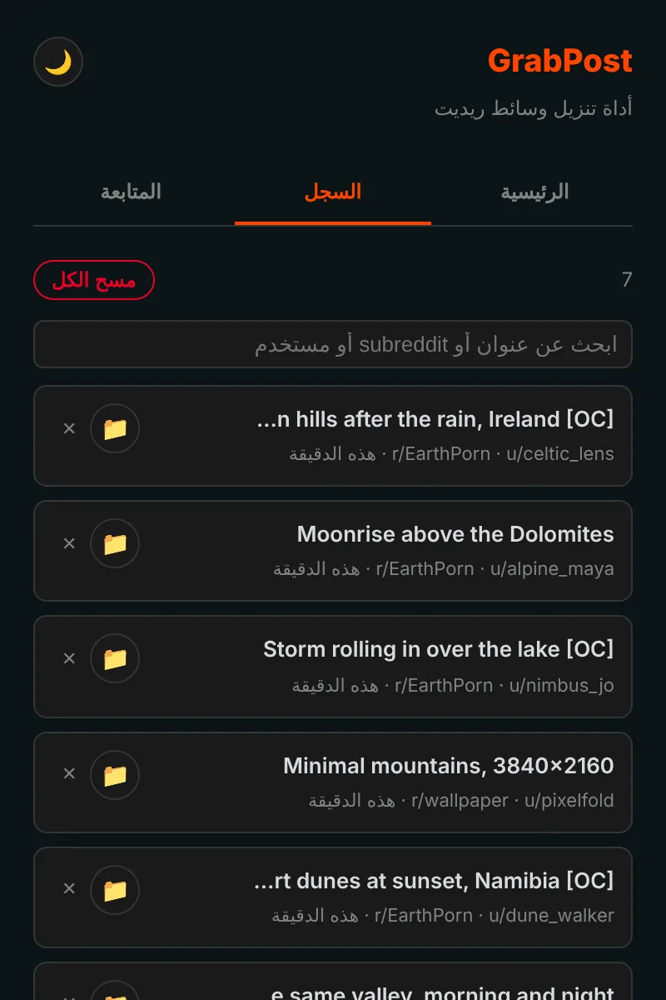

احفظ أي شيء من Reddit بنقرة واحدة.
يضيف GrabPost زر تنزيل إلى كل منشور في Reddit. تحتفظ الفيديوهات بصوتها، وتصل المعارض كاملة، وتُنزَّل مجتمعات أو ملفات شخصية كاملة بينما تنشغل بشيء آخر. مجاني وبلا تتبّع.
ليس في المتاجر بعد. التثبيت من GitHub يستغرق دقيقة تقريبًا.

اضغط الزر الموجود في المنشور.
زر في كل منشور
يظهر الزر البرتقالي في صف التصويت والمشاركة لكل منشور: في الصفحة الرئيسية والملفات الشخصية ونتائج البحث، وفي Reddit الجديد والقديم. يعمل مع الصور والمعارض وصور GIF وRedgifs وروابط Imgur. ويُنزّل الاختصار Alt+Shift+D المنشور الموجود في منتصف الشاشة.

صفحات كاملة دفعة واحدة
يقرأ الوضع السريع المجتمع أو الملف الشخصي أو المجتمع المتعدد أو نتائج البحث مباشرة من بيانات Reddit، فلا حاجة للتمرير. يتخطى ما لديك بالفعل ويتوقف عند المنشورات التي نزّلتها من قبل. وتُنزَّل منشوراتك المحفوظة بالطريقة نفسها.

تابع، وتصلك المنشورات الجديدة
تابع المجتمعات والمستخدمين واحصل على إشعار عند ظهور وسائط جديدة، أو دعها تُنزَّل وحدها. صفِّ حسب نوع الوسائط أو المحتوى الحساس أو الكلمات المفتاحية. يمكن فحص ما يصل إلى 10 مفضلات كل 5 دقائق.

كل تنزيل محفوظ في السجل
يعرض السجل ما حفظته مع خانة بحث، وتُعلَّم المنشورات التي لديك على Reddit. تُنشأ النسخ الاحتياطية تلقائيًا، فلا تمحو إعادة التثبيت قائمتك.

التفاصيل محسوبة
فيديوهات مع الصوت
يحفظ Reddit الصوت في ملف منفصل. يجده GrabPost ويدمجه داخل متصفحك.
مجلداتك وأسماء ملفاتك
قوالب مثل {subreddit}/{user} للمجلدات و{date}_{title} للملفات.
بلا تكرار
يتعرّف على الصورة نفسها حتى لو أعاد أحدهم رفعها في مجتمع آخر.
يعمل بجانب IDM
لا تستطيع برامج إدارة التنزيل الاستيلاء على الملف وتجاهل أسماء مجلداتك.
صبور مع Reddit
عندما يطلب Reddit استراحة، ينتظر GrabPost المدة المطلوبة تمامًا ثم يكمل.
15 لغة
الإضافة وهذه الصفحة تتحدثان لغتك.
ما تنزّله شأنك وحدك
- لا تحليلات ولا تتبّع ولا حساب
- يتواصل فقط مع Reddit والمواقع التي تستضيف وسائطه
- يبقى سجلك وإعداداتك داخل متصفحك
- مفتوح المصدر على GitHub
ثبّته في دقيقة
GrabPost ليس في سوق Chrome الإلكتروني بعد، لذا يُثبَّت يدويًا. يعمل في Chrome وEdge وBrave وOpera ومتصفحات Chromium الأخرى.
- نزّل أحدث ملف grabpost-v…zip من GitHub وفك ضغطه في مجلد ستحتفظ به.
- افتح
chrome://extensionsوفعّل وضع المطوّر في الزاوية العلوية. - انقر تحميل إضافة غير مضغوطة واختر مجلد grabpost بعد فك ضغطه.
- افتح Reddit. يظهر الزر البرتقالي على المنشورات، وتفتح أيقونة شريط الأدوات لوحة GrabPost.
للتحديث، استبدل الملفات في المجلد نفسه واضغط زر إعادة التحميل في بطاقة GrabPost. تبقى إعداداتك وسجلك كما هي.
Firefox: إصدار متجر الإضافات في الطريق. حتى ذلك الحين يمكن تحميل ملف Firefox مؤقتًا من about:debugging.
أسئلة
هل GrabPost مجاني؟
نعم، كل الميزات مجانية. وإن وفّر عليك الوقت، يمكنك أن تهدي المطوّر فنجان قهوة.
أين تُحفظ الملفات؟
في مجلد التنزيلات في متصفحك، داخل مجلد فرعي تختاره. الافتراضي هو Reddit Downloads، وتبدأ أسماء الملفات باسم المجتمع.
هل يجب تسجيل الدخول إلى Reddit؟
فقط لمنشوراتك المحفوظة وللمجتمعات المقيّدة بالعمر. كل شيء آخر يعمل بلا حساب.
هل أفقد سجلي إذا أعدت التثبيت؟
لا. مع تفعيل مزامنة المتصفح تعود الإعدادات وقائمة المتابعة تلقائيًا. كما يُحفظ ملف نسخ احتياطي تلقائيًا، ويستطيع GrabPost إعادة بناء سجله من قائمة تنزيلات المتصفح.
هل يعمل في Edge أو Brave أو Opera؟
نعم. أي متصفح Chromium يمكنه تحميل إضافة غير مضغوطة يعمل مع ملف Chrome.
نزّل GrabPost
ليس في المتاجر بعد. التثبيت من GitHub يستغرق دقيقة تقريبًا.